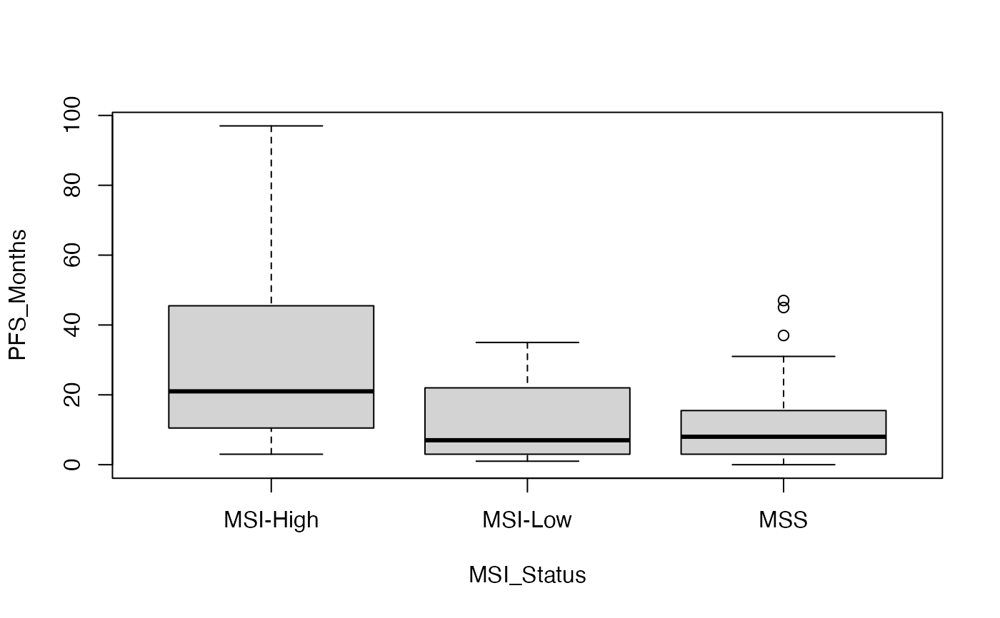

A targeted dataset focusing on actionable molecular alterations and treatment outcomes in precision oncology. Includes clinically relevant biomarkers that guide targeted therapy selection and treatment response assessment.
Format
A data frame with 116 rows and 17 variables:
- Patient_ID
Character. Patient identifier
- Age
Numeric. Patient age
- Gender
Character. Patient gender
- Tumor_Type
Character. Primary tumor type
- Grade
Numeric. Histologic grade
- EGFR_Mutation
Character. EGFR mutation for targeted therapy
- KRAS_Mutation
Character. KRAS mutation status
- BRAF_Mutation
Character. BRAF mutation for targeted therapy
- ALK_Fusion
Character. ALK fusion for targeted therapy
- HER2_IHC
Character. HER2 status for targeted therapy
- HER2_FISH_Status
Character. HER2 amplification status
- PD_L1_TPS
Numeric. PD-L1 for immunotherapy selection
- MSI_Status
Character. Microsatellite instability for immunotherapy
- Treatment_Response
Character. Treatment response outcome
- PFS_Months
Numeric. Progression-free survival
- Progression_Event
Numeric. Disease progression indicator
Examples
data(precision_oncology)
#> Warning: data set ‘precision_oncology’ not found
# Biomarker-treatment response correlation
table(precision_oncology$EGFR_Mutation, precision_oncology$Treatment_Response)
#>
#> Complete_Response Partial_Response Progressive_Disease
#> Negative 10 22 30
#> Positive 0 2 5
#>
#> Stable_Disease
#> Negative 43
#> Positive 4
# Immunotherapy biomarker analysis
boxplot(PFS_Months ~ MSI_Status, data = precision_oncology)

# Targeted therapy selection workflow
subset(precision_oncology, HER2_FISH_Status == "Amplified")
#> # A tibble: 21 × 16
#> Patient_ID Age Gender Tumor_Type Grade EGFR_Mutation KRAS_Mutation
#> <chr> <dbl> <chr> <chr> <int> <chr> <chr>
#> 1 MP0004 60 Female Colorectal_Adenoca… 2 Negative Negative
#> 2 MP0012 87 Male Breast_Invasive_Du… 2 Negative Negative
#> 3 MP0051 59 Male Colorectal_Adenoca… 2 Negative Negative
#> 4 MP0055 57 Male Melanoma 2 Negative Negative
#> 5 MP0068 84 Male Melanoma 2 Negative Negative
#> 6 MP0073 52 Male Melanoma 1 Negative Negative
#> 7 MP0097 59 Female Lung_Adenocarcinoma 2 Negative Negative
#> 8 MP0105 67 Female Colorectal_Adenoca… 2 Negative Negative
#> 9 MP0118 73 Female Breast_Invasive_Du… 2 Negative Negative
#> 10 MP0173 65 Male Colorectal_Adenoca… 2 Negative Negative
#> # ℹ 11 more rows
#> # ℹ 9 more variables: BRAF_Mutation <chr>, ALK_Fusion <chr>, HER2_IHC <chr>,
#> # HER2_FISH_Status <chr>, PD_L1_TPS <dbl>, MSI_Status <chr>,
#> # Treatment_Response <chr>, PFS_Months <dbl>, Progression_Event <int>